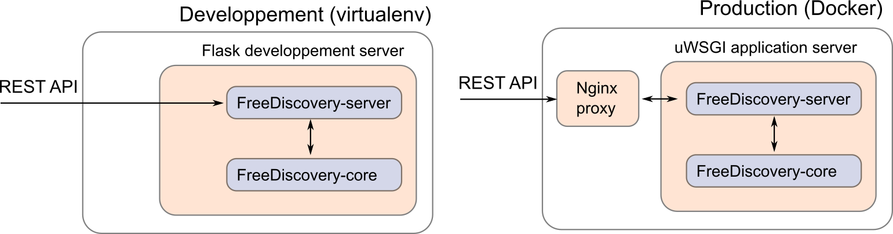

Deployment options¶

1. Development server¶
The options used to start the FreeDiscovery server are defined in scripts/run_api.py. By default, the options processes=1, threaded=True are used, which allows to run on all platforms, but disables parallel processing in FreeDiscovery.
On Linux, Mac or when running in a Docker container (including on Windows), a more efficient approach is to set processes=4, threaded=False (e.g. to run on 4 CPU cores), before starting the server (or before building the Docker container), which would allow parallel hashed feature extraction and cross validations.
2. Docker deployment on AWS¶
This section illustrates how to run a FreeDiscovery Docker images on AWS EC2 without using the EC2 container service, however it can be extended to that purpose. Here we manually create an AMI instance and install docker, but docker-machine with amazonec2 driver can also be used to simplify the setup phase.
Choose an AMI (e.g. Amazon Linux AMI) and create an instance with sufficient resources (at least 16GB RAM, 4 CPU cores, twice the RAM size in free disk space,
m4.xlargeor preferablyc4.2xlargeto process TREC legal 700,000 document collection)- port 5001 is used by default in FreeDiscovery and must be open to incoming connections.
Install Docker in the instance (cf. for instance the “Docker Basics” AWS EC2 guide)
A prebuild Docker image of FreeDiscovery can be downloaded with,
- [only once]
docker login# using your hub.docker.com credentials - [only once, optional] requesting permission to access the
freediscovery/freediscoveryimage for youruserid docker pull freediscovery/freediscovery:<tag># where<tag>is one of the stable tags on github.com/FreeDiscovery/FreeDiscovery.
- [only once]
Create or choose a folder where the data to process will be copied and that can be used to store temporary files.
Run Docker and mount the above folder under
/freediscovery_sharedinside the container,docker run -t -i -v /<shared_folder>:/freediscovery_shared -p 5001:5001 freediscovery/freediscovery